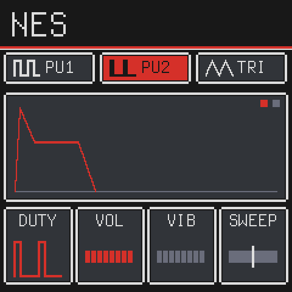
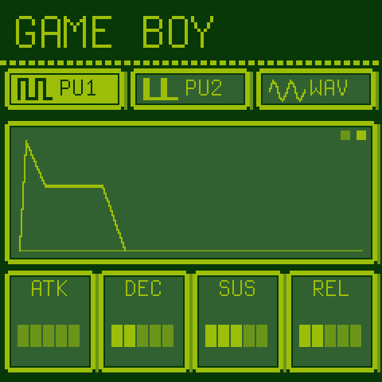
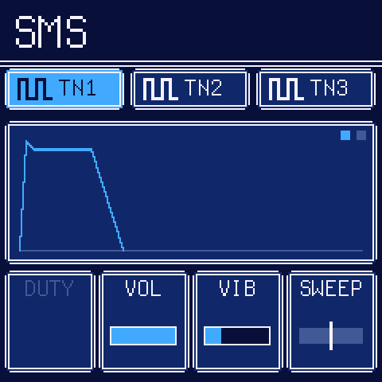
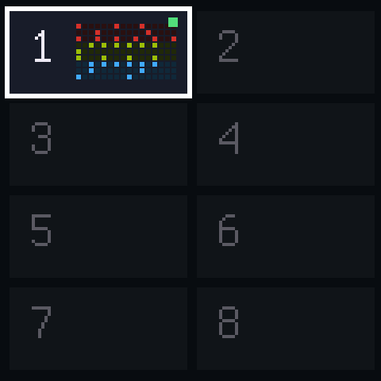
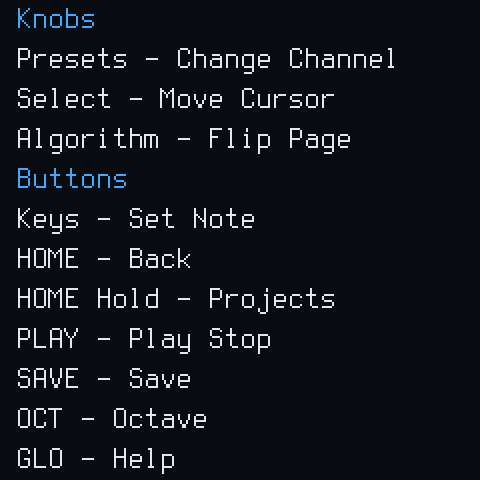

ChipboxALPHA
Chiptune 'grovebox' thing with NES, GB, and SMS stuff.






What works
- Kind of a proof of concept right now. Sounds cool. Not really worth installing yet lmao
Not yet: everything
Install
Download chipbox-*.fwsc from the Releases page and, with Python 3:
pip install mido python-rtmidi python3 tools/fm1_install.py chipbox-0.1.0-alpha.fwsc
Build
Only ever ran this on a mac. good luck for other platforms
tools/get_toolchain.sh # clang for the chip, to ~/.jieli/toolchain
git clone --depth 1 --branch AC79NN_SDK_V1.2.1_2023-12-13 \
https://gitee.com/Jieli-Tech/fw-AC79_AIoT_SDK.git ~/fw-AC79_AIoT_SDK
./build.sh # -> build/chipbox.fwsc
./build.sh --release 0.1.0-alpha # -> build/chipbox-0.1.0-alpha.fwsc
tests/run_host.sh tests/screens.txt # on Linux: the screens as PNG, no FM-1 needed
On a Mac, run the host simulator in Docker (see docs/RELEASING.md).
Versions
v0.MINOR.PATCH-alpha: a new minor for new things you can do, a patch for fixes. See CHANGELOG.md and docs/RELEASING.md.